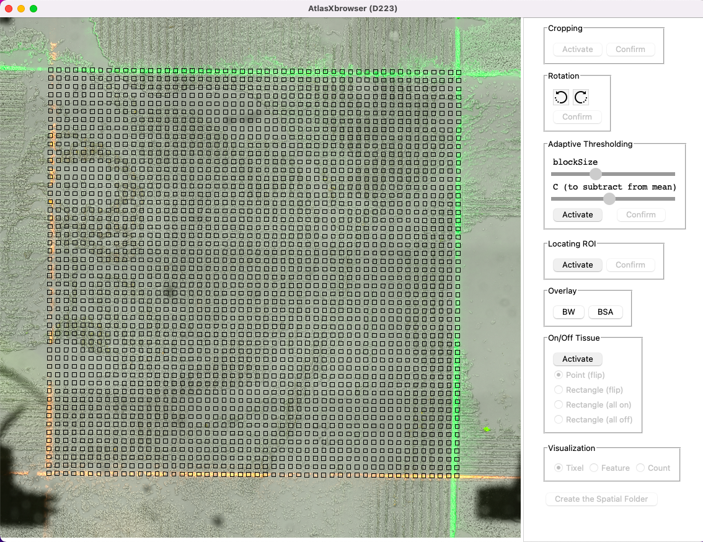
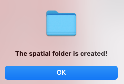

In this stage of the image processing, we want to narrow in on the Region of Interest or ROI of the tissue.
This is the region in which the barcodes flown from chip A overlap with the barcodes flown from chip B, allowing for the preservation of spatial information.
Each region on the slide which has a unique combination of barcodes from chip A, as well as barcodes from chip B, is called a Tixel. During a DBiT-seq experiment,
a grid of tixels is created on the slide. For each one of these tixels, with the knowledge of which channel each barcode sequence comes from, the unique combination of barcodes
from an A chip and B chip channel, serve as X and Y coordinates used to map sequencing reads back to their proper spatial orientation on the tissue.
During this step we want to define the region of interest for the browser. This step is made much easier if the
outside channels of the chip have BSA fluid with stained dye within them. As then the ROI corresponds to the square created
by the overlap of these neon channels.
Navigate to the Locating ROI tab on the right hand side of the screen, and select Activate.
Drag the corners of the newly displayed red box to be as close as possible to the edges of the ROI.
Note: The BSA is being flowed through the outside channels on both chips. As such these fluorescently dyed channels must be fully included when
designating the ROI. In practice, this means the ideal placement of the red box is exactly on the outside of the fluorescently stained channels.
Circles have been drawn on the image above to indicate the corners of the ROI.
The above image shows the proper designation of the ROI, again note how the rectangle includes the channels containing fluorescence.
Once the four corners have properly placed, select Confirm within the same Locating ROI tab.
To check the work done in the last step, we must ensure that the alignment of the tixels on the image are as expected.
The visualization of the tixels corresponds to how the ROI was discerned in the previous step.
The Locating ROI tab allows the placement of the tixels to be visualized on top of the images.
Select the Tixels button to observe how the tixels are overlayed ontop of the binarized image.
Select the BSA button to view the tixels overlayed onto the cropped BSA stained image.
Note: One way to check the placement of the ROI is to ensure that the outer rows and columns of the BSA image align with the BSA lines of the image, as shown below.

In this image the outer layers of tixels both horizontally and vertically align with the BSA staining, validating the placement of the ROI.
If the placement of the ROI must be re-done for any reason, just re-select the Activate button in the Locating ROI tab and the red rectangle can be re-adjusted.
Based on the results of the adaptive thresholding and how many pixels within a tixel have been designated white, AtlasXbrowser automatically predicts which tixels are over tissue and which are not.
In this step you can examine the image and modify any of the classifications AtlasBrower made.
Select Activate under the On/Off Tissue tab on the right side of the screen.
Tixels filled in red indicate that they are covering tissue, and clear tixels indicate they are not. Use any or multiple of the selection options to changes these designations.
Point (flip) Use your mouse to click on any individual tixel. The state of this tixel will flip from what identify formerly was, meaning on tissue sites to to off tissue and vice versa.
Rectangle (flip) Click and drag on screen to make an encompassing red rectangle. All the tixels included within this rectangle will have their state flipped from what it formerly was.
Rectangle (all on) Click and drag on screen to create a rectangle which encompasses all desired tixels. Tixels in this region will all be designated as covering tissue.
Rectangle (all off) Click and drag on screen to create a rectangle which encompasses all desired tixels. Every tixel within this region will be designated as being off tissue.
Using the background color along with the pattern of the underlying image, the user can amend the classifications made by AtlasXbrowser about which tixels are on or off tissue.
The background of either the black and white thresholded image and the colored BSA image can be flipped back and forth by using the BW and BSA buttons under the Overlay tab.
Once confident in the designations made about tixels being on/off tissue, select Create the Spatial Folder.

This popup should appear upon the spatial folder being created.
Navigate to the next section to examine the newly created spatial folder.